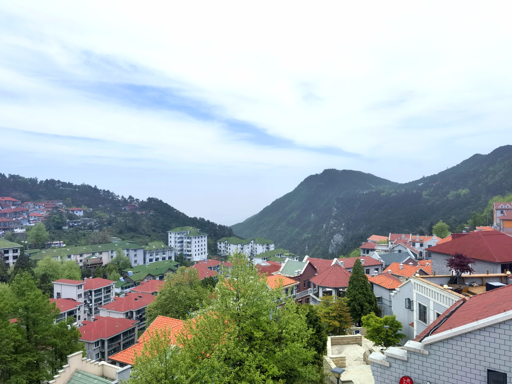
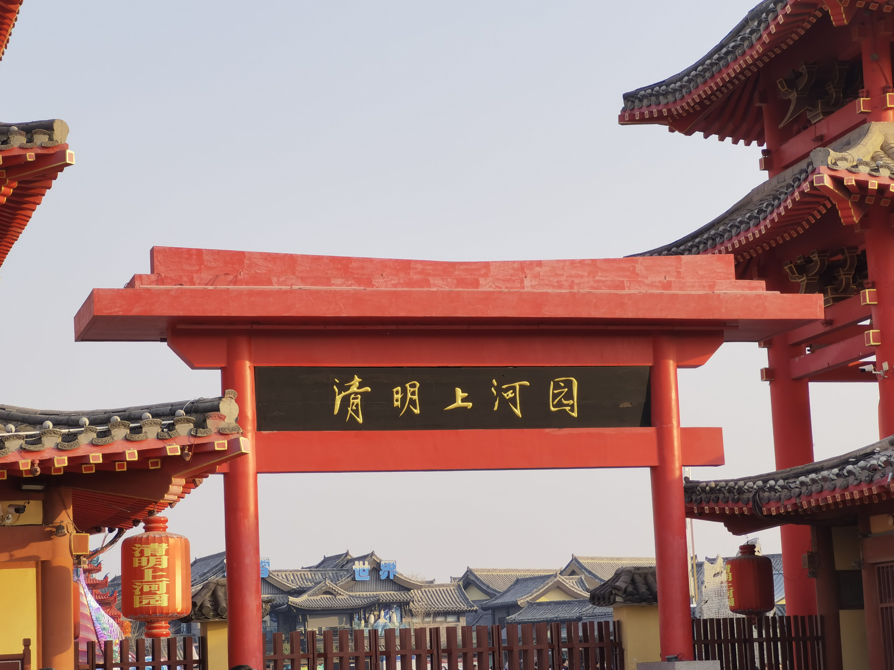
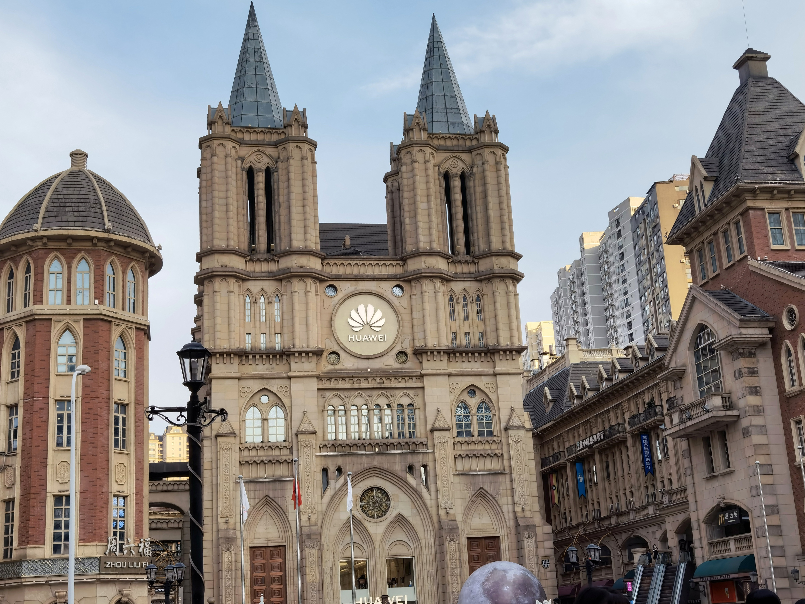

我的足迹

庐山

开封

武汉


我的足迹
庐山
开封
武汉
| 姓名： | 刘** |
|---|---|
| 爱好： | 听歌，动漫，以及各种小众爱好 |
| 性格： | 活泼开朗的i人 |
| 家乡： | 山东菏泽 |
| 座右铭： | 有压力才会有动力 |
自我评价 本人性格活泼开朗、富有活力，待人热情、真诚。平时在空闲时间喜欢听音乐或看综艺，可以让自己的身心愉悦，放松心情。从中减轻平时学习中带来的压力，在日常生活中，我喜欢保持良好的心态，因为稳定的精神状态可以减少焦虑，对于学习，我认为有张有弛才是我习惯的学习模式，不会太过颓废，也不会太过劳累，普通是我的人生态度。